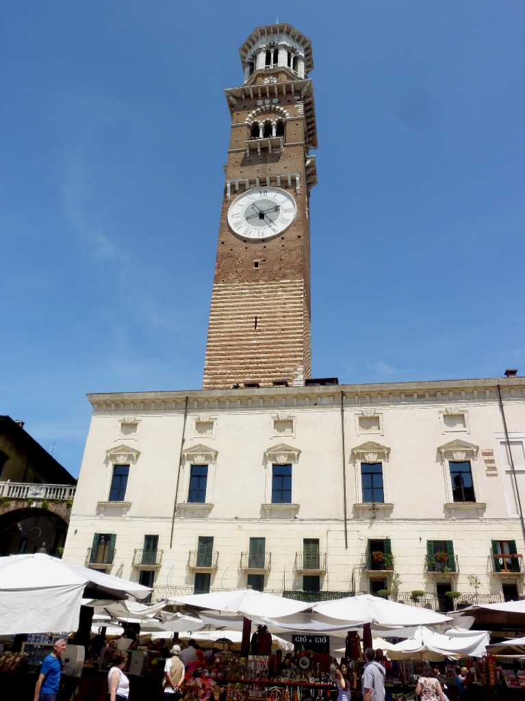
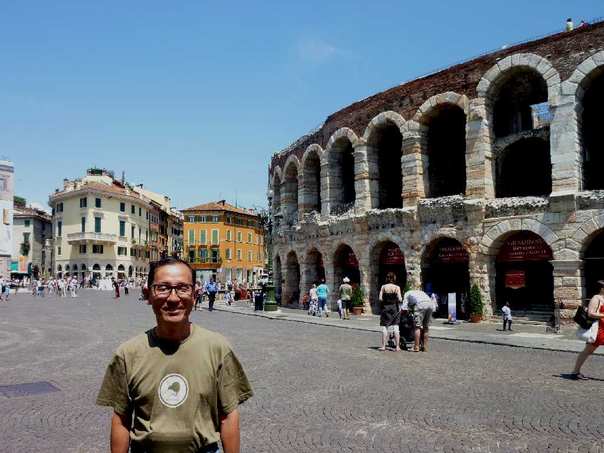
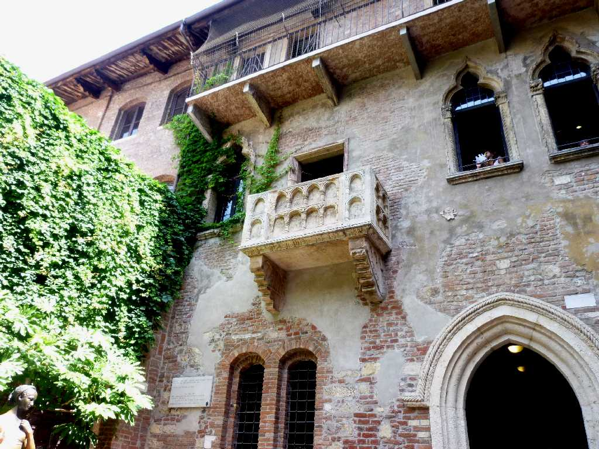
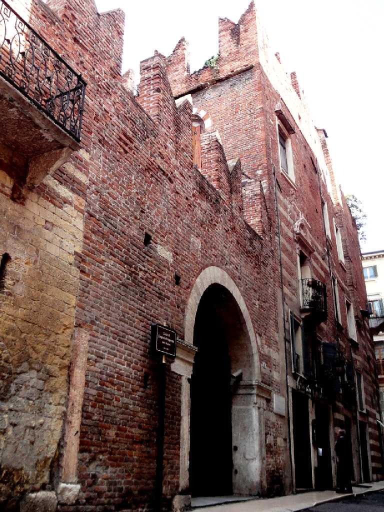

Torre dei Lamberti Piazza delle Erbe Verona
紀元前１世紀からローマ帝国の東西南北四つの街道が交わる交通の要所として栄えた

July 1 2011 Arena di Verona
紀元前後に創られたローマ劇場で長径１３９ｍ短径１１０ｍ収容人員２万５千人で現在世界最大の屋外オペラ劇場として利用されている

Casa di Giulietta Casa di Romeo
ロメオとジュリエットの舞台となったロメオの家とジュリエットの家